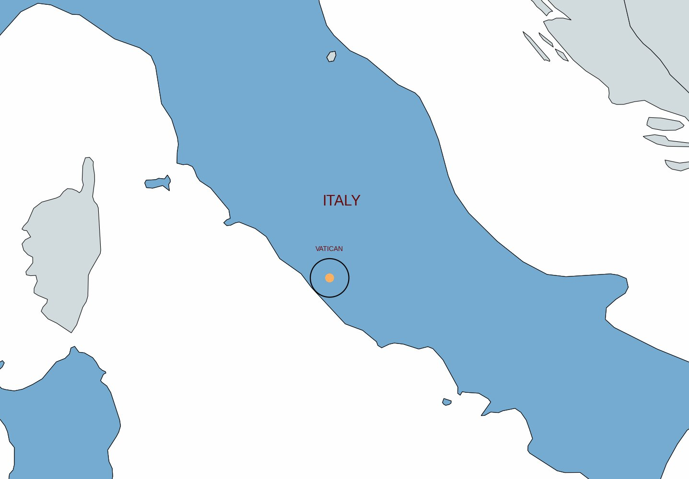
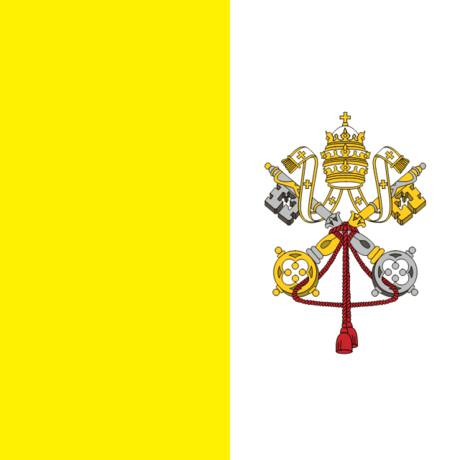
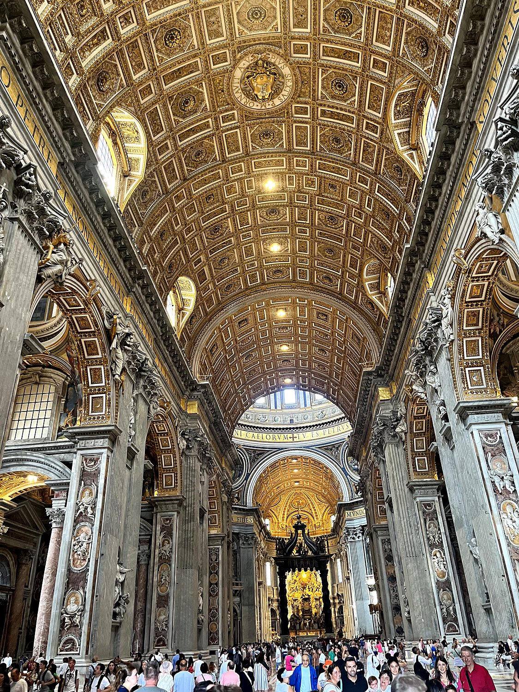
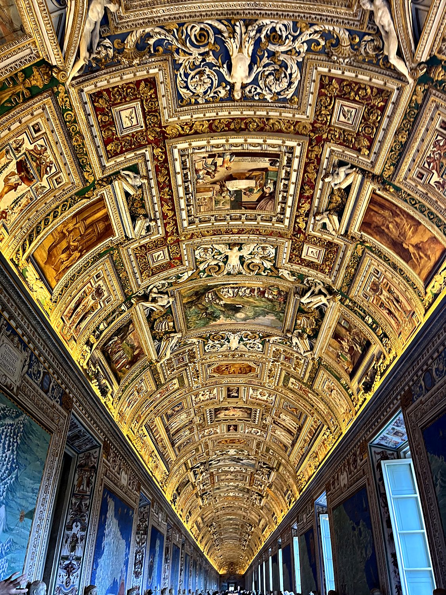
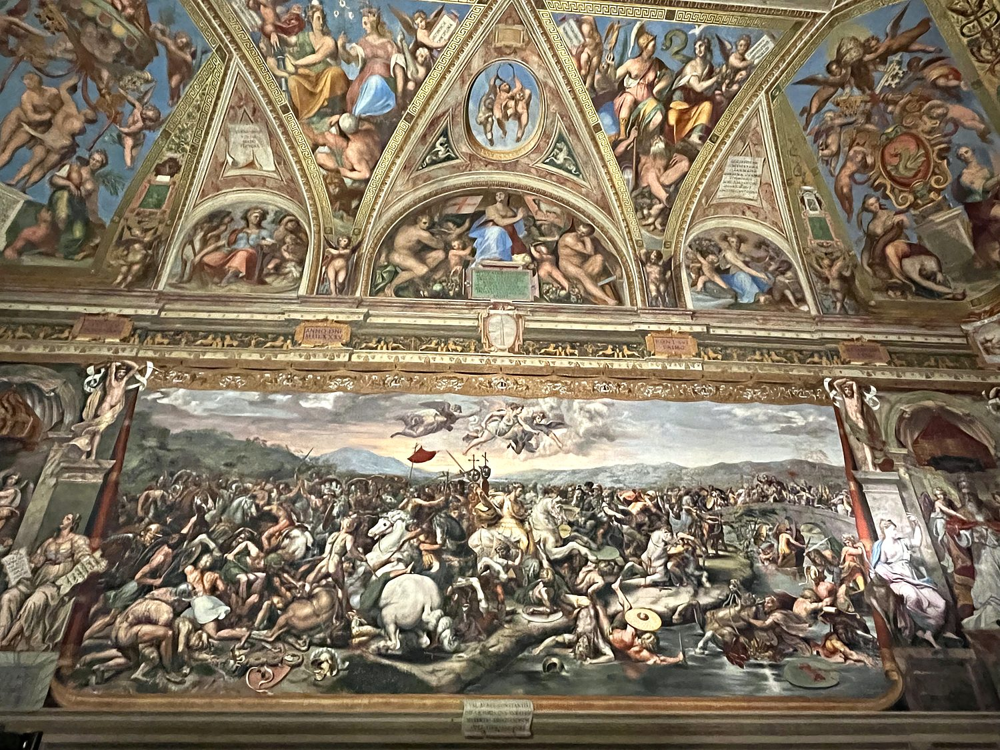

I visited Vatican City in August 2023, as a short but memorable detour from a longer stay in Rome, which conveniently wraps entirely around it. Calling it a “detour” feels almost too grand for a country you can cross on foot in a matter of minutes – the whole place is smaller than many city parks – and yet few square kilometers on Earth are packed with more art, history, and sheer architectural ambition. I arrived on foot across the Sant’Angelo bridge with a friend as the light rain tapered off and the sun sank behind the clouds, which is, I am told, roughly how every travel photographer dreams of arriving. What followed was a whirlwind of the largest church in Christendom, a museum so vast it makes your feet file a formal complaint, and a rooftop dinner of hummus and spaghetti with a friend studying at the Pontifical College next door. For the world's smallest country, it left an outsized impression.
There is really only one “city” in Vatican City, and it announces itself the moment you step into St. Peter's Square. Designed by the Baroque master Gian Lorenzo Bernini in the 17th century, the vast oval piazza is embraced by two sweeping colonnades, with 284 columns arranged four deep, topped by 140 statues of saints. Bernini intended these to be the welcoming arms of the Church reaching out to the faithful. At its center rises a 4,000-year-old Egyptian obelisk, hauled to Rome by the emperor Caligula and re-erected here in 1586 in an engineering feat that reportedly took 900 men, 140 horses, and 47 cranes. Standing in the square as the evening light faded, I was struck by the sheer scale of it. The piazza and its obelisk seem to take up a genuinely comical fraction of the entire country, like a nation that decided to be mostly front yard.

The Vatican's history stretches back nearly two thousand years, to a far humbler scene: a Roman circus on the Vatican Hill where, according to tradition, the apostle Peter was martyred and buried around 64 AD. A shrine grew over his tomb, then a basilica commissioned by the emperor Constantine in the 4th century, and eventually the colossal Renaissance church that stands today. For much of the medieval and early modern era, the popes were not merely spiritual leaders but temporal rulers of the Papal States, a broad swath of central Italy governed from Rome. That earthly kingdom came to an abrupt end in 1870, when the newly unified Kingdom of Italy seized Rome and the popes, refusing to recognize the loss, sealed themselves inside the Vatican as self-declared “prisoners” for the next several decades.

The stalemate was finally resolved in 1929, when the Lateran Treaty between the Holy See and Mussolini's government created the sovereign state of Vatican City as we know it. This independent country spans just 49 hectares, making it comfortably the smallest in the world by both area and population. Today it functions as an absolute monarchy with the pope as head of state, defended by the famously halberd-wielding Swiss Guard in their striped Renaissance uniforms. It prints its own stamps, mints its own euros, and runs its own post office, which is widely reputed to be more reliable than Italy's. Beneath the ceremony, the Vatican remains the spiritual headquarters of roughly 1.4 billion Catholics worldwide and the custodian of one of humanity's greatest collections of art. Its chief exports are, essentially, faith and beauty.
St. Peter's Basilica is, quite simply, one of the largest and most magnificent churches ever built. Stepping inside, it is impossible not to feel very, very small. The nave stretches away beneath a gilded coffered ceiling toward Michelangelo's soaring dome, still one of the tallest in the world, while at the heart of the church rises Bernini's Baldacchino, a 90-foot bronze canopy of twisting columns marking the spot above St. Peter's tomb. The building is a roll call of Renaissance and Baroque genius (Michelangelo, Bernini, Bramante, and Maderno all left their mark), and it holds treasures like Michelangelo's Pietà, carved when he was just 24. The cleverest trick is the scale: the interior is so perfectly proportioned that you don't realize how enormous it is until you notice that the cherubs holding the holy water fonts are the size of grown adults. I waited a good while in line to get in, and it was worth every minute.

The Vatican Museums are the improbable result of five centuries of popes accumulating art, and touring them is less a museum visit than a forced march through the greatest attic in human history. Founded in the early 1500s, they wind for miles past Roman sculptures, tapestries, and Egyptian antiquities, culminating in two of the most dazzling ceilings anywhere. The first is the Gallery of Maps, pictured here. This 120-meter corridor has a vaulted ceiling that drips with gilded stucco and painted frames, lining the walls with 40 topographical maps of Italy frescoed in the 1580s. The second, of course, is the Sistine Chapel, where Michelangelo spent four back-breaking years painting the Book of Genesis across the ceiling, including the famous near-touching fingertips of the Creation of Adam. Photography inside the chapel is strictly forbidden, a rule enforced by guards who periodically bark “no photo!” into the reverent hush like the world's most solemn game of whack-a-mole. The opulence and staggering wealth of the Sistine Chapel contrast sharply with Christ’s message of humility, and helped me understand why the Protestant Movement rebelled against the Catholic Church.

Tucked into the route through the Vatican Museums are the Raphael Rooms, four reception chambers frescoed by the young Renaissance master Raphael and his workshop in the early 1500s, at the same time Michelangelo was laboring next door in the Sistine Chapel. Commissioned by Pope Julius II, who apparently decided the existing decor wasn't quite papal enough, the rooms are covered floor to ceiling in some of the most celebrated frescoes of the High Renaissance. The most famous is The School of Athens, which gathers the great philosophers of antiquity into a single imagined hall. The room pictured here, the Hall of Constantine, blazes with grand battle scenes and allegorical figures, a reminder that the Vatican was as much a showcase of earthly power and artistic one-upmanship as of heavenly devotion. Wandering through them, you get the distinct sense of two rival geniuses working within earshot of each other, each determined not to be outdone.
